FastBrain
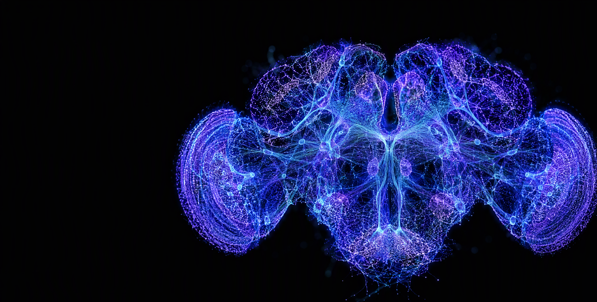
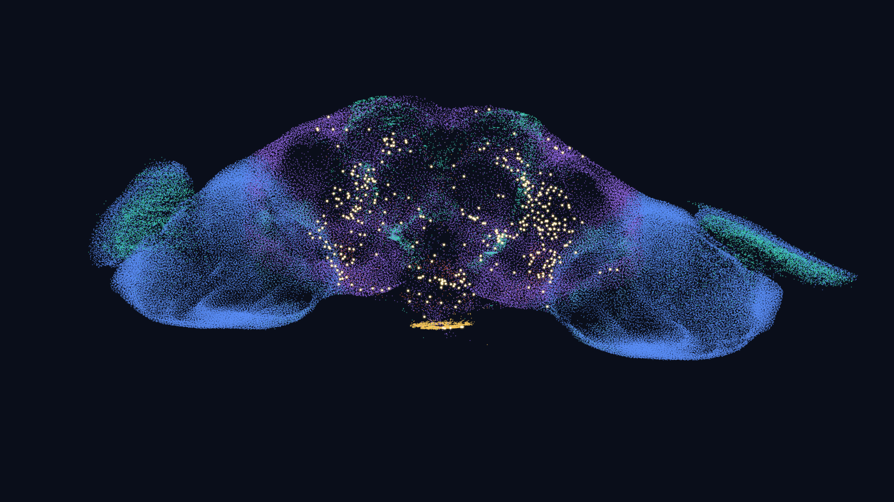
概述。本项目在消费级 GPU 上实时运行果蝇全脑 LIF 模型（Shiu et al. 2024，Nature），核心是自研的 FastBrain 事件驱动引擎：突触块压缩 + CUDA Graph 整段回放，在 RTX 3060 Laptop（6 GB 显存）上达到 1 倍实时，精度与参考实现的差异等于随机种子噪声。仓库为 eonsystemspbc/fly-brain 的研究分支，新增 FastBrain 引擎、实时交互控制台、3D 回放与系统验证体系，并把 FastBrain 接入官方基准成为第 7 个后端。
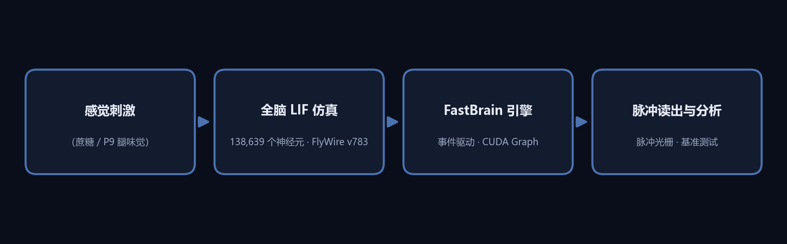
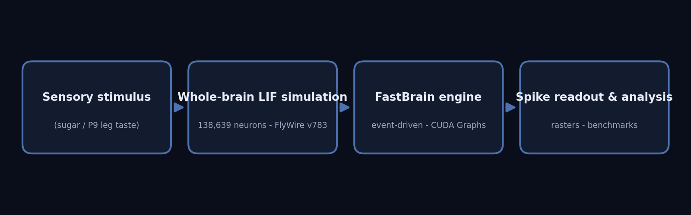
模型与数据Model & Data
模型。渗漏积分发放（LIF）点神经元 + alpha 突触，dt = 0.1 ms（实时模式 dt = 0.25 ms），权重由 FlyWire v783 连接组突触数导出，递质符号来自递质预测。支持任意神经元集合的泊松激活（光遗传式）与沉默。蘑菇体学习相关细胞已在注释中核实：5,177 个 Kenyon 细胞（11 类）、96 个 MBON（35 型）、331 个多巴胺能神经元（PAM/PPL 27 型）。
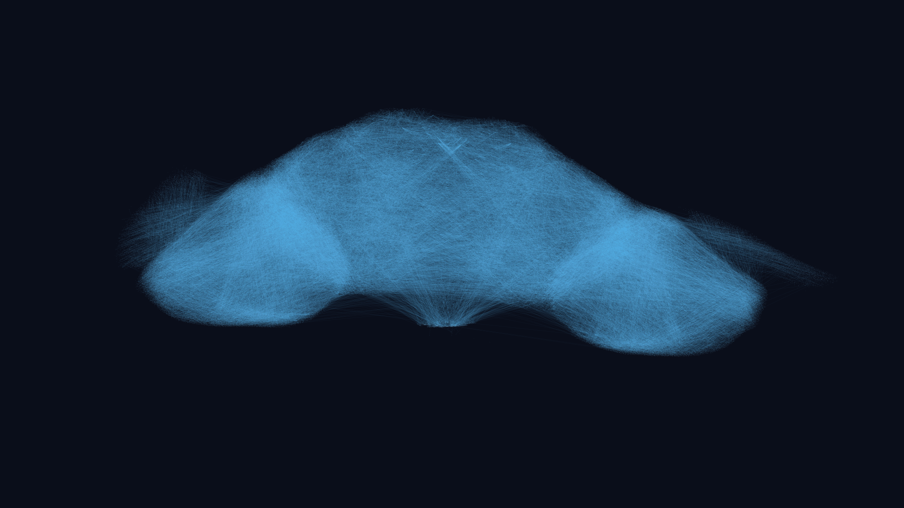
连接组抽样布线可视化（真实突触连接采样）。/ A sampled rendering of real synaptic wiring.
FastBrain 引擎The FastBrain Engine
设计。原版 PyTorch 后端每步做一次稠密 SpMV，仅 0.1 倍实时；诊断表明瓶颈是每步约 75 个 CUDA kernel 的启动开销。FastBrain 的方案：① 事件驱动——WT 切成 256 宽定长突触块（15.1 万块），每步用 cumsum 压缩把放电神经元的块装入固定槽位，gather + index_add 替代全图乘法；② 全张量定形，整块 S 步录成一张 CUDA Graph 一次启动，每步内核数从 ~75 降到 ~33；③ 延迟环取延迟步数整数倍，环槽位成为编译期常量；④ 脉冲导出复用压缩后的活动块列表。显存占用约 0.45 GB。
基准对比Benchmark
设置。糖味觉 GRN 200 Hz 刺激，t_run = 0.5 s，RTX 3060 Laptop，run_label local_fastbrain。计时口径与其他后端一致（setup / build / sim 分离，脉冲导出在计时区外）。
local_fastbrain. Timing follows the same conventions as the other backends (setup / build / sim reported separately; spike export outside the timed region).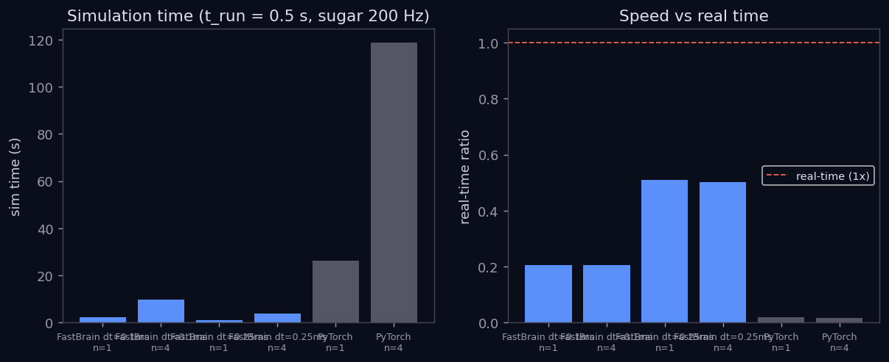
| 后端 Backend | n_run | setup (s) | build (s) | sim (s) | 实时比 RT |
|---|---|---|---|---|---|
| PyTorch (CUDA) | 1 | 1.28 | 0 | 26.30 | 0.019× |
| PyTorch (CUDA) | 4 | 0.98 | 0 | 118.69 | 0.017× |
| FastBrain dt 0.25 | 1 | 5.66 | 0.30 | 0.98 | 0.51× |
| FastBrain dt 0.25 | 4 | 23.02 | 0.62 | 3.98 | 0.50× |
| FastBrain dt 0.1 | 1 | 5.16 | 0.32 | 2.43 | 0.21× |
| FastBrain dt 0.1 | 4 | 21.85 | 1.24 | 9.78 | 0.20× |
引擎验证Validation
验证矩阵。2 种刺激（sugar / p9）× 2 种时长（0.5 / 1.0 s）× 5 个种子 × dt ∈ {0.1, 0.25, 0.5} ms，外加 10 秒长程漂移检查。每个指标都和"参考模型自身换种子"的噪声地板对比——差异必须落在噪声之内才算通过。
| 指标 Metric | 参考噪声地板 Ref floor | FastBrain（全部 dt） |
|---|---|---|
| 放电率相关 rate corr（sugar） | 0.991 | 0.990 |
| Jaccard 活跃集（sugar） | 0.928 | 0.92 |
| 脉冲时序精度 ±2 ms（sugar） | 0.342 | 0.34 |
| 10 s 漂移 drift | — | 逐秒相关 0.989–0.996，无发散 no divergence |
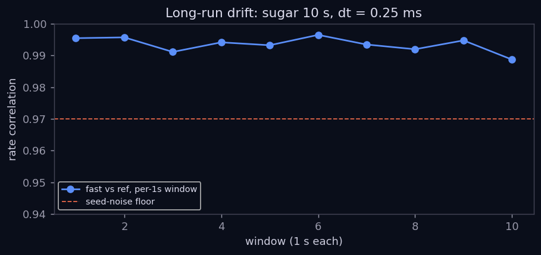
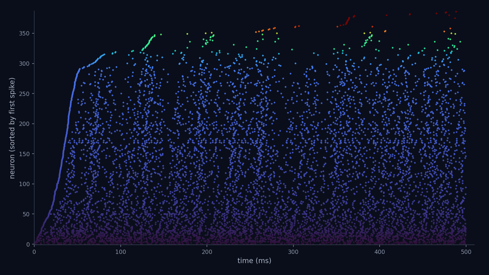
糖味觉实验脉冲栅格图（按首次放电延迟排序）。/ Spike raster of the sugar experiment, neurons sorted by first-spike latency.
可视化Visualization
实时控制台与 3D 回放。WebSocket 实时控制台支持点击任意细胞类型刺激、示波器探针、暂停/重置；离线 3D 回放把 13.8 万神经元坐标、脉冲序列与膜电位波形打包成单文件 HTML。下图为回放页面真实截图（糖味觉刺激后 349.9 ms，380 个神经元已放电，5,828 次脉冲）。
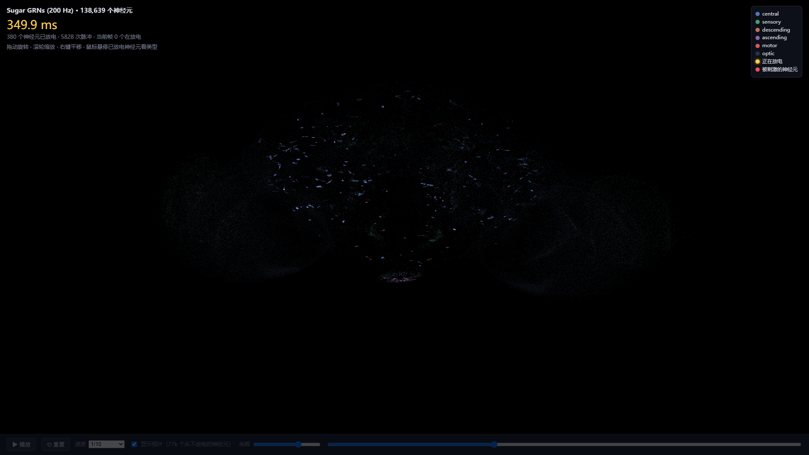
研究路线Roadmap
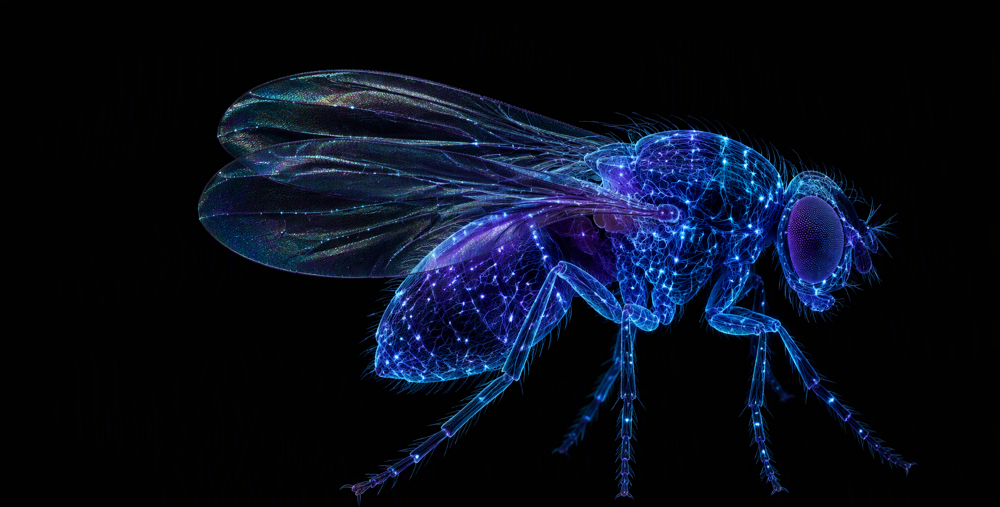
| 阶段 Phase | 内容（中） | Content (EN) |
|---|---|---|
| 0 ✅ | 引擎系统验证矩阵（本页第 5 节） | Systematic engine validation (this page, §5) |
| 1 ⏳ | 脉冲全脑模型 vs 公开钙成像数据的首次动力学级基准（DANDI 001869 looming；Aimon 2019 气味）+ Shiu 结论的符号/权重敏感性审计（含重连 null 对照） | First dynamics-level benchmark of the spiking whole-brain model vs public calcium-imaging datasets + sensitivity/null audit of published conclusions |
| 2（二选一） | A. 贝叶斯优化刺激逆向设计（交付 split-GAL4 驱动线方案）；B. 蘑菇体三因子学习嵌入全脑（先孤立复现条件反射，再全脑背景消融） | A. BO-based inverse stimulus design (deliverable: driver-line choice); B. mushroom-body plasticity in situ (isolated-MB reproduction first, then whole-brain background ablation) |
数据与引用Data & References
- Shiu et al. 2024, Nature 634:210–219 — 基础模型 base model · PMC11446845
- FlyWire v783 连接组 connectome · flywire.ai
- 上游仓库 upstream: eonsystemspbc/fly-brain（GPL-2.0）
- 本仓库 this fork: ArcadiaE/fly-brain · 基准数据
data/results/local_fastbrain/· 验证矩阵experiments/out/validation/ - Phase 1 目标数据集 target datasets: DANDI 001869（looming）· Aimon et al. 2019 PLOS Biology（odor, CRCNS 10.6080/K01J97ZN）
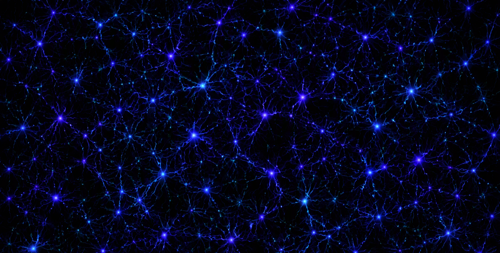